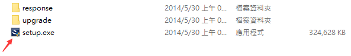
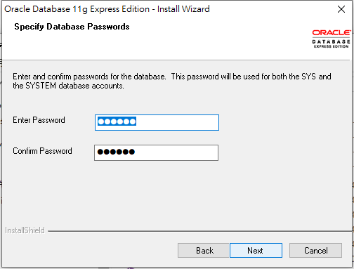
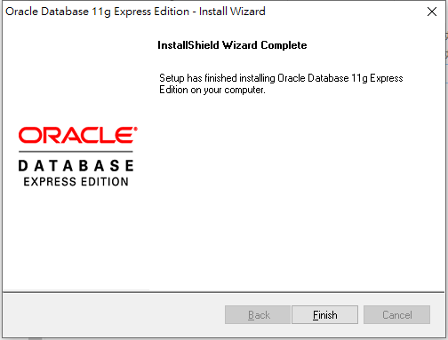
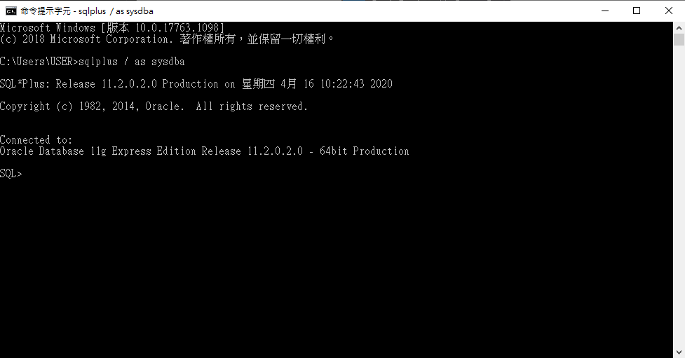
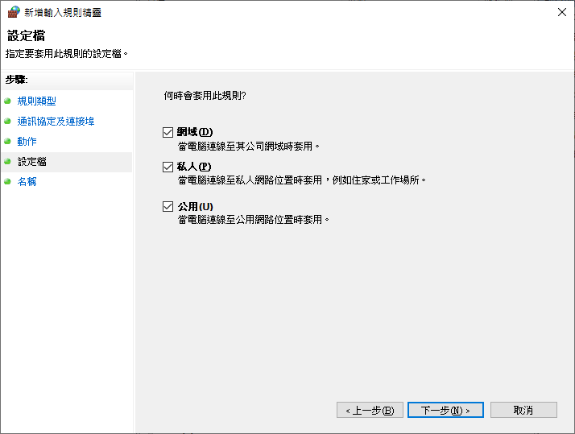
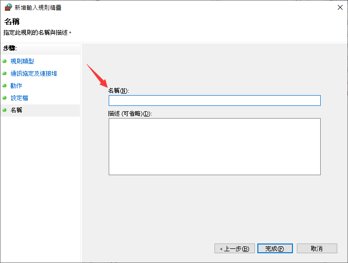
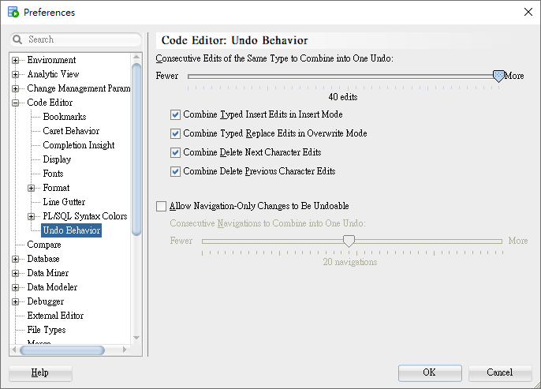
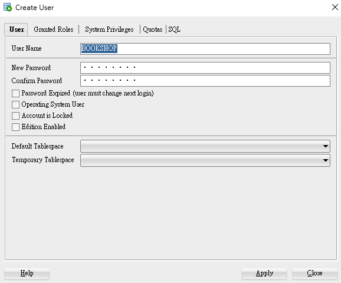

目錄
- 1. Oracle 安裝
- 2. 刪除雲資料庫快捷
- 3. 開啟/停用 Database
- 4. cmd 指令測試是否安裝成功
- 5. 啟用 Oracle SQL Developer
- 6. Oracle 修改語系
- 7. Oracle 建立本機連線
- 8. Oracle 建立外部連線
- 9. Oracle 修改編碼格式 UTF-8
- 10. Oracle 修改可還原次數
- 11. Oracle 建立使用者
- 12. Oracle 刪除使用者
- 13. Oracle 自訂快捷
- 14. Oracle 匯入檔案
- 15. Oracle 修改預設字體大小
- 16. Oracle 修改預設字體
- 17. Oracle 顯示行號
1. Oracle 安裝
下載 OracleXE 版，並解壓

點擊 setup.exe 安裝
進入安裝步驟

選擇安裝目錄

輸入帳號密碼 (此為系統帳號，且帳密區分大小寫)
- 若後續帳號丟失則須重新安裝資料庫
安裝完成
- 進行安裝時可能會在進度 99%時卡很久，只要等待即可

2. 刪除雲資料庫快捷
因為連結是錯誤的，所以直接刪除此快捷就好

3. 開啟/停用 Database
- Start Database 開啟
Stop Database 停用

4. cmd 指令測試是否安裝成功
輸入指令
sqlplus / as sysdba
5. 啟用 Oracle SQL Developer
下載
sqldeveloper-19.2.1.247.2212-no-jre.zip並解壓縮- 此版本有解決 1.7 版的輸入中文即會造成編輯器崩潰的情形

- 此版本有解決 1.7 版的輸入中文即會造成編輯器崩潰的情形
選擇 jdk 安裝目錄

開始安裝

安裝完成

後續開啟位置

6. Oracle 修改語系
修改
sqldeveloper.confD:\sqldeveloper\sqldeveloper\bin\sqldeveloper.conf
添加
AddVMOption -Duser.language=en
重新運行後介面即是英文版
7. Oracle 建立本機連線
Connections>New Connections...
設定新連線名稱
Name:system> 輸入帳號密碼 >save>Connect
連線成功

連線成功後完整畫面

8. Oracle 建立外部連線
設定防火牆
右鍵輸入規則 > 新增規則 > 連接埠

特定本機連接埠為
1521
下一步

下一步
自訂名稱 > 完成

9. Oracle 修改編碼格式 UTF-8
Tools>Preferences...
選擇
UTF-8
10. Oracle 修改可還原次數
Tools>Preferences...>Code Editor>Undo Behavior- 可將文字編輯器還原次數調高
- 可將文字編輯器還原次數調高
11. Oracle 建立使用者
system>Other Users
右鍵
Other Users>Create User
User> 設定User Name...Granted Roles> 勾選CONNECT、DBA、RESOURCE
設定完成 (建立好帳號並不會同時關聯資料庫，若須建立連線請參照: 建立本機連線

12. Oracle 刪除使用者

13. Oracle 自訂快捷
Tools>Preferences...>Shortcut Keys
14. Oracle 匯入檔案
Open...
選擇檔案 >
open
15. Oracle 修改預設字體大小
Tools>Preferences...>Code Editor>Fonts>Font Size
16. Oracle 修改預設字體
Tools>Preferences...>Code Editor>Fonts>Font Name
17. Oracle 顯示行號
Tools>Preferences...>Code Editor>Line Gutter> 勾選Show Line Numbers